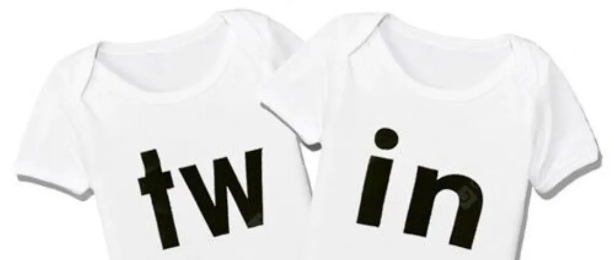
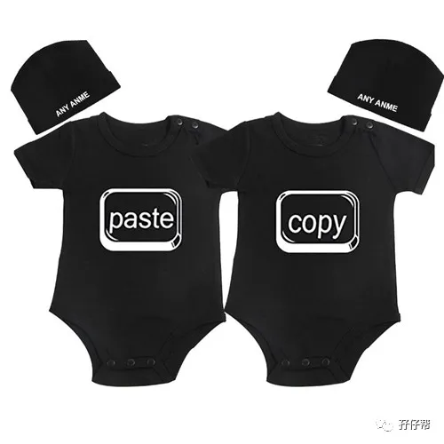
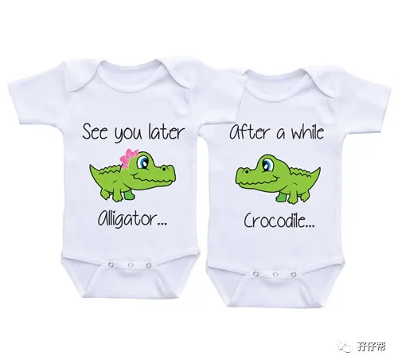
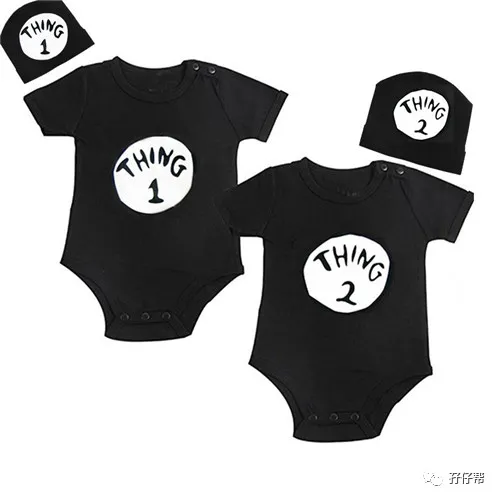
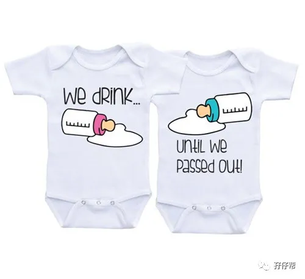
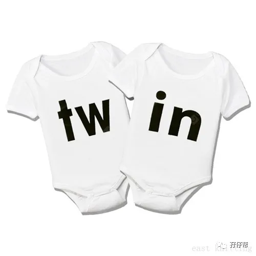

文|圆圈妈，一个文思如尿崩的双胎妈妈
图|来自网络，如有侵权，请联系删除
· 正 · 文 · 来 · 啦 ·
【01】
5个理由，双胞胎必须穿着一样
从圆圈出生到现在，我一直给他们哥俩穿一模一样的衣服，大概是以下这5个原因：
①世俗观念，先入为主
在我与双胞胎没有半点关系之前，只要一提到双胞胎，我马上就联想到那是一对神秘而特殊的组合，全身上下都是一模一样，包括但不限于五官，衣帽，服饰…
因此，当我怀里左拥右抱着一对双胞胎儿子时，有个声音告诉我「放心，这是你的崽儿们，随你咋子折腾」
于是，我第一反应就是，双胞胎不都是全部要一样的嘛，至于衣服，当然要给他们穿一模一样的， 甚至精确到小内裤，也必须同款式同颜色同图案...
②纯粹好玩，虚荣心作祟
虽然养育双胞胎真的很累，但是累归累，你敢说你不幸福吗？
我反正挺嘚瑟的。
每当别人艳羡的眼神看着我们一家四口时，我就感觉自己走路都带风，偷偷告诉你：如果不穿一样，我真的生怕别人不知道那是对双胞胎？
可以理所当然地给孩子们穿一模一样的衣服，为何不呢？多威风啊！
你知道生双胞胎最好玩的事情是什么吗？
没错，就是要让你傻傻分不清！
这大概是所有双胞胎爸爸妈妈能存活至今的唯一精神粮食---让虚荣心无节操地发酵膨胀而不必受人诟病。
③迷信说法，不得不从
据说双胞胎从小就要穿一模一样的衣服，还要一直穿到3岁，不然孩子不好带，容易生病…..
@#￥%……
这个谣言虽然很恶毒，但不得不承认，对孩子们赋予高度期望的父母，有时候在现实面前，不得不求个心理安慰。
因此，每当婆婆经常在耳旁念叨养育双胞胎那些禁忌时，我总是抱着宁可信其有不可信其无的想法，从了她的观念，只要不是太离谱！
最主要的是，我自己也觉得，给双胞胎穿一模一样，其实并无不妥。
④一视同仁，避免双胎之争
当圆圈互相争抢的情况愈发突出时，我更加坚信，给他们穿一模一样的衣服是个明智的决定。
举个例子：两件T恤，分别是恐龙图案和海豚图案，也许是受99.9%相同基因的影响，他们的眼光也几乎一样（很少会不一样），都想穿恐龙图案的衣服。
于是，一件T恤引发的手足内战正式拉开帷幕…
我受过多次教训后得出一个结论：同时拿两件不一样的衣服给双胞胎孩子自己选，无异于飞蛾扑火，自取灭亡。
本来双胞胎孩子互相争抢的几率特别大，机智如你，千万不要再拿衣服去刺激两孩子“自相残杀”了。
干脆全部同款，把撕逼源头扼杀在摇篮中，看他们还争个啥子！
⑤一样穿着，“多！快！好！省！”
如果你想在15分钟之后带着双胞胎孩子出门，那切记，一定要给他们穿一模一样的衣服。
不然，想出门？门都没有！
我选自己的衣服都要纠结半天，更何况是两个孩子的衣服。什么英伦风，朋克风适合老大还是老二这些问题….
真的是太！多！余！
当我根据他们各自所谓的个性精心挑选了两套衣服时，两位小爷还未必领情，若是两人都偏爱其一，那就等着观战吧！
带两熊孩子上街已经耗费了很多个梁静茹的勇气，若还要在衣服上大费周折，真的不是来开玩笑的嘛？
干脆统一着装，简单粗暴，方便快捷，省时省心又省力。
其实，我在孩子们的衣着打扮方面，除了偶尔有点强迫症，其他的都没有特别讲究，并没有严格要求必须任何时候都要穿得一模一样，像下面提到的这类父母，控制欲极强，这就未免太极端了。
“随着年龄的增长，我对同样衣着这件事感到越来越自卑。老妈不准我们没经过她的批准就穿自己挑选的衣服出门，所以我们俩的衣柜都在她房间，平时上锁的，出门只能跟她报备，然后她挑一样的衣服给我俩。” （摘自中国青年政治学院论文《双胞胎长幼次序社会化机制研究——基于对双胞胎与非双胞胎家庭社会化过程的比较》）
【02】
3个理由，双胞胎不应该穿一模一样
当然，也有很多父母不喜欢给双胞胎穿一模一样的衣服，理由如下：
①有助于发展自我认同
《好事成双》的作者Ella Lu就是其中一位，她是一位双胞胎妈妈，她在书中提到她的看法：
“我在挑选衣服上就不会刻意都要买一模一样的服装，而是给稳重的哥哥穿蓝色系的衣服；活泼的弟弟穿黄色系的衣服。”
喜欢买不一样颜色的物品主要原因是因为原本我就认为每位孩子就是独一无二的个体，所以没有必要强制他们要穿一样。
②担心失去特有的个性
双胞胎是一对，同时也是两个不同的孩子，他们有各自的性格特征，若从小把他们打扮一样，会逐渐失去个性，等长大之后，会更难鼓励他们去发展自己的个性。
穿一模一样的服装，外界会模糊双胞胎个体，放大一人是另一个人的复制，但其实现实生活中每个人都是相对独立的个体，我们不能剥夺个体的选择权。
③影响双胎手足之情
临床心理学家布莱尔（Linda Blair）说，双胞胎父母喜欢把小孩打扮一样，认为这样更可爱，但这可能会影响双胞胎彼此的手足情。
她表示，“小孩子最希望在父母眼中与众不同，打扮一样会影响他们彼此的关系，他们会想要竞争，要挤走那个最像他/她自己的人。”
【03】
任何理由都不如孩子们穿得舒适
曾经看过一篇有趣的短文说道：「所有可爱的服饰都只是为了满足父母们的虚荣心，对孩子来说穿得舒适才是最重要！」
我认为，在孩子对衣着没有特殊要求，还没有建立个人审美观念，父母完全可以按照自己的喜好给孩子们穿上不同服饰，不管是一模一样的装扮还是个性分明的风范，均可以任性DIY。
让双胞胎穿一样的衣服其实也没有特别目的，说白了就是图个可爱、好玩，有趣。
常言道，如果孩子不是生来玩的，那生来干什么？
当然，如果孩子们希望你提早归还他的自主选择权，那就另当别论了。
比如等他们长大，到了会说不想穿什么衣服的年纪了或者是想要穿某种款式的衣服了，你就放手吧！
圆圈兄弟现在4岁，我对他们必须穿一模一样的想法没那么强烈了。
首先他们的自我意识逐渐增强，其次是为了鼓励他们发展各自的特性，不一样的衣着服饰确实会给人不一样的感觉。
最重要一点是，他们越长大，我就越不喜欢带着他们上街时被人盯着看那种滋味，真的有点被人当猴看的感觉，有时为了不引起别人注意，刻意让他们不穿一样，甚至不走在一起。
当然，最终原因是，我更愿意尊重他们的选择，让他们自己去衣帽间找衣服穿，找到哪一件就穿哪一件，不需要跟我报备，我也不会强迫他们。
总之，双胞胎该不该穿一样的衣服，见仁见智，并无定论，只要家长看着开心，两孩子穿得高兴就行。
-END-
今日互动话题
#你会给双胞胎穿一模一样的衣服吗#
评论区聊一聊
说说你的理由吧
一好文推荐一
一加入社群一
一关注孖仔帮一
点击“阅读原文”，直达双胞胎育儿网站www.sgguy.com.
喜欢这个文章吗？请点“好看”
让更多双胞胎家庭找到组织





